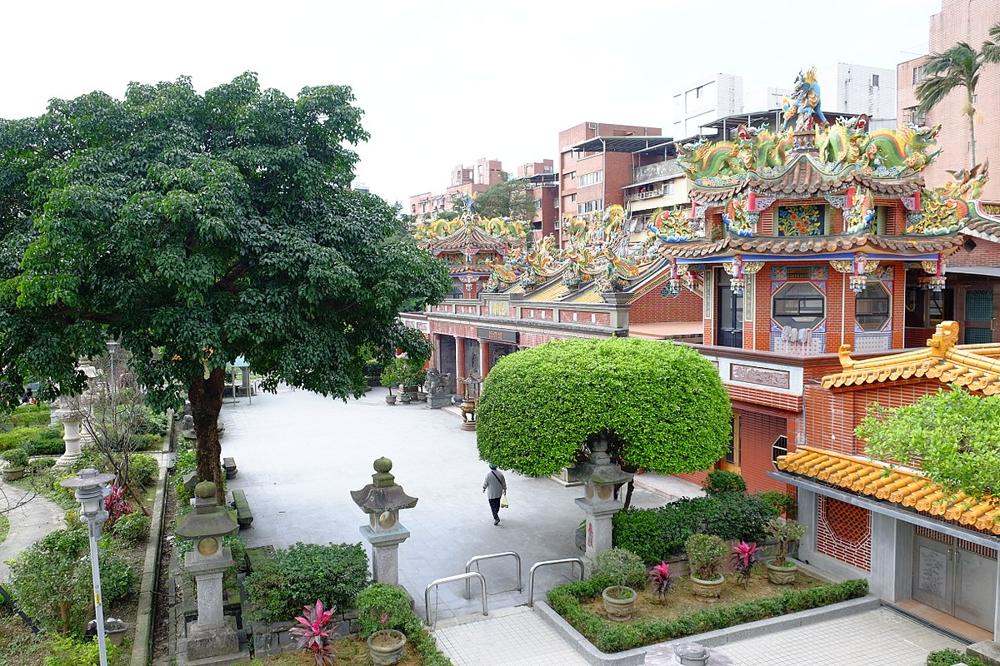

1640年
1896-1897年
民國34年
明清時期
日據時期
光復後時期
-
汐止的發展，可以追溯到明清時期。西元1640年，荷蘭人進兵台北，驅西班牙人而有其地。文獻所記載之「峰仔峙社」，約為今日汐止基隆河南北兩岸，原多為原住民所居。清乾隆初葉，有廣東人從淡水港溯河，轉基隆河抵達今日汐止境內，與凱達格蘭平埔族墾殖，並建「峰仔峙莊」，以基隆河為主要的經濟動脈。至乾隆三十年遂發展成為「峰仔峙街」，即為中正路
迄今，汐止人仍習慣以「街仔」來稱呼。汐止附近山區的茶農，如平溪、石碇、瑞芳等地，先將茶葉運至水返腳街上的茶館，茶館將茶葉精製好後，即利用基隆河轉淡水河運至大稻埕輸出；又由於汐止位於基隆河中游，有許多支流深入附近山區，使汐止成為附近山區土產輸出及雜貨輸入的集散地。汐止於清光緒廿年﹙1894年﹚，隸屬基隆廳石碇堡轄區。
明清後期
-
1896-1897年，汐止改隸台北縣水返腳辦務署石碇堡。宣統元年﹙明治四十二年，1909年﹚，改隸台北廳水返腳支廳水返腳區。日據之初，因火車的運費太貴，故商家仍利用船運。大稻埕為本島貨物之重要集散地，由大陸及日本輸入的貨物由淡水港進口，經淡水河運至大稻埕，再溯基隆河而上至水返腳。於（淡水廳志）的記載，與汐止相關的渡口共有十二個，上行可通往基隆，也可往基隆河下游到台北，汐止也因為交的便利繁華一時。日據後期﹙大正九年，1920年﹚，改台北洲七星郡汐止街管轄。
日據時期
-

早期汐止以茶葉、農業、煤礦及重工業為主，居民都是黑手或農民。過去，北台灣兩大礦坑在汐止和基隆，而由汐止所出產的煤礦，名稱叫做木蘭煤礦。日據時代，曾經在汐止發展重工業，汐止重工業成立（即今台灣煉鐵廠），汐止住有許多礦工及煉鐵工人。政府開發基隆港後，位在基隆港背後的五堵、汐止，成了最重要的貨櫃集散中心。